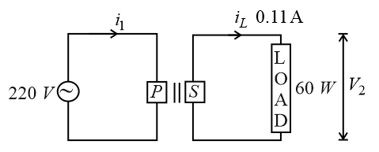

13JEE Main 2021 (Online) 16 Mar Evening ShiftMCQ (Single Correct Answer) +4-1
For the given circuit, comment on the type of transformer used :

AAuxilliary transformer
BAuto transformer
CStep-up transformer
DStep down transformer
Correct Answer: C
Source: JEE Main Official Answer Key
25JEE Main 2021 (Online) 24 Feb Morning ShiftNumerical Answer +40
A common transistor radio set requires for its operation. The source is constructed by using 12 V D . C . D . C . a transformer and a rectifier circuit, which are operated at 220 V A . C . on standard domestic A . C . supply. The number of turns of secondary coil are 24, then the number of turns of primary are
Correct Answer: 440
Source: JEE Main Official Answer Key
12JEE Main 2021 (Online) 25 Feb Evening ShiftMCQ (Single Correct Answer) +4-1
Match List I with List II. List I List II
ARectifier (i) Used either for stepping up or stepping down the A.C. voltage
BStabilizer (ii) Used to convert A.C. voltage into D.C. voltage
CTransformer(iii)Used to remove any ripple in the rectified output voltage
DFilter (iv) Used for constant output voltage even when the input voltage or load current change Choose the correct answer from the options given below:
Correct Answer: A
Source: JEE Main Official Answer Key
15JEE Main 2024 (Online) 01 Feb Evening ShiftMCQ (Single Correct Answer) +4-1
A transformer has an efficiency of 80% and works at 10 V and 4 kW . If the secondary voltage is 240 V, then the current in the secondary coil is:
AOption A
B1 . 59 A 13 . 33 A
C1 . 33 A
D15 . 1 A
Correct Answer: B
Source: JEE Main Official Answer Key
15JEE Main 2024 (Online) 30 Jan Morning ShiftMCQ (Single Correct Answer) +4-1
Primary coil of a transformer is connected to . Primary and secondary turns of the transforms are 220 V AC 100 and 10 respectively. Secondary coil of transformer is connected to two series resistances as shown in figure. The output voltage (V0) is :
A7 V
B15 V
C44 V
D22 V → cos(ωt −kz)ˆi
Correct Answer: A
Source: JEE Main Official Answer Key
29JEE Main 2024 (Online) 30 Jan Evening ShiftNumerical Answer +40
A power transmission line feeds input power at 2 . 3 kV to a step down transformer with its primary winding having 3000 turns. The output power is delivered at 230 V by the transformer. The current in the primary of the transformer is 5 A and its efficiency is 90%. The winding of transformer is made of copper. The output current of transformer is ____A.